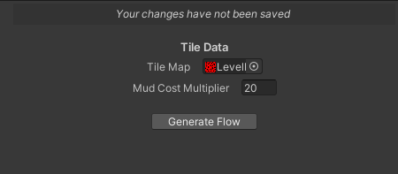
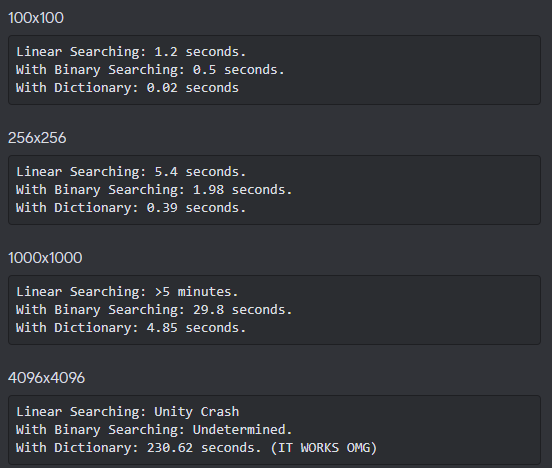

About
Projects

Shroom Defenders is a tower defence game made by second year students as a part of AIE's advanced diploma course. I was the tools programmer on this team.
The project needs something to direct enemies along paths and towards the centre of the level. Enemies should be able to move fluidly and not in purely straight lines. Enemies wandering off the path briefly is okay, and expected when they swarm, but they should attempt to get back onto the path quickly. The project also requires a way of determining where towers (shrooms) can be placed, which should be opposite to the areas enemies can traverse.
23rd August 2023
The solution to the requirements I came up with was to have a grid of values that represents the level. This will store whether a tile is Path or Placable so the interaction manager can check where it can and can't place towers. This will also be vital later when storing the direction enemies should be instructed to go.

A very helpful thing I got working early on was a visualisation of the levels flow lines. This allowed me to quickly check that values were being set correctly. Currently they all just tend to the centre so thats where the next step comes in.
24th August 2023
WIP Explain why this was the chosen method and what project needs it solves. WIP

WIP Explain the processes the chosen method uses. WIP
26th August 2023

WIP Explain the editor and the choices made for it based on designer needs. WIP
27th August 2023

WIP Explain the ways in which the algorithm was optimised and how impactful that was. WIP
28th August 2023
The biggest thing that caused issues for me was the large amount of data involved. A lot of optimisations were good but it was clear this could not be ran at runtime. This meant I needed to come up with a way to store the generated data so it could be read at runtime.

Textures and my level data have a few things in common. But the one I care about is that they're both a 2d array of values, and reading textures at runtime is something computers are very good at doing well. I decided to have the red channel determine the tile type (path or placeable), the green channel and blue channels determine the x and y components of the flow direction. The flow direction components had to be remapped so that -1 to 1 became 0 to 1. And the path vs placeable was just remapped to 0 and 1.
2nd September 2023

The enemies in the game project using the boids flocking algorithm to move and swarm together. The enemies get flow information by querying the stored level data for which tile they are on, and then add the returned direction to its flocking influences.
24th October 2023
Many discussions were had in relation to the state of the game at this point in the project, and artists were having a difficult time fitting art to the restrictive design of binary levels (placeable vs walkable). The idea was proposed that there should be a third option that is both unplacable and unwalkable.

The way I solved this was by additionally writing some areas into the input texture as an 'obstacle' value. And artists, who were also designing levels, wanted the order of values switched. So now when the input texture is read it handles 0-1 colour values less than 0.33 as obstacles, values of 0.33-0.67 as placable, and values greater than 0.67 as walkable.
WIP HOW I FEEL AND HOW I'D EXPAND ON IT. WIP
WIP WHAT I LEARNED. WIP